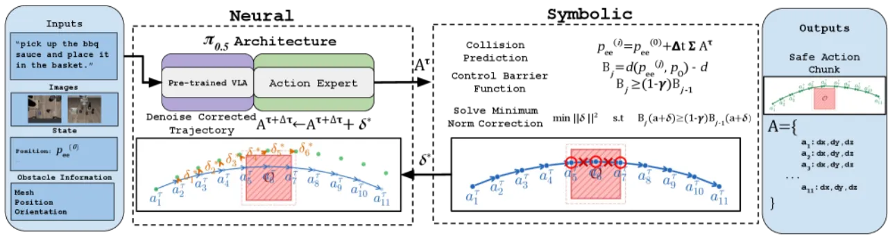
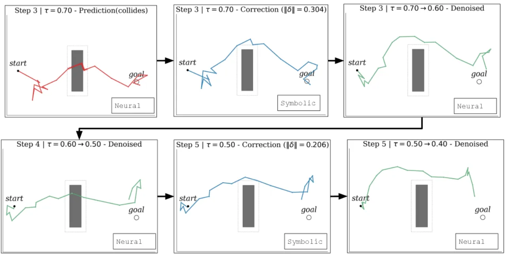
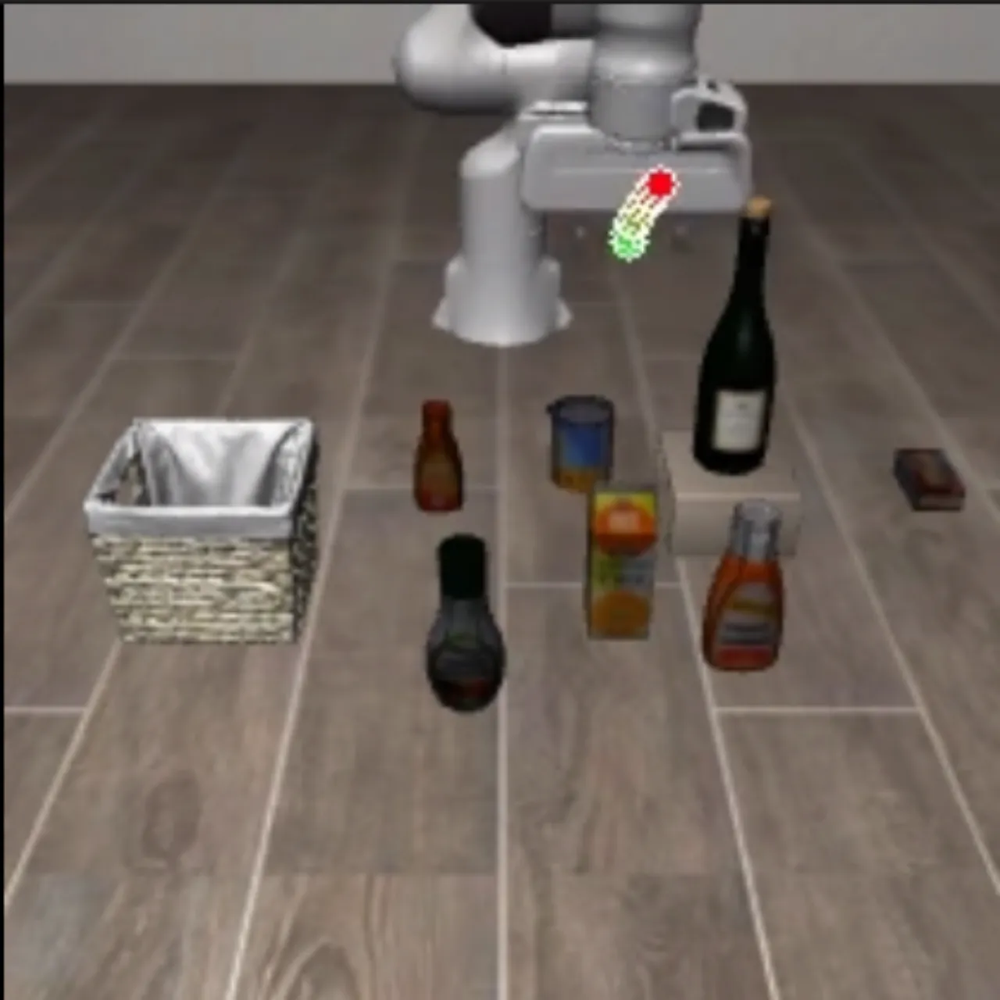

把符号化的 control barrier function (CBF) 约束求解交织进 flow matching VLA 的去噪循环：每一步都把中间轨迹当作预测轨迹检查碰撞，并解一个 minimum-norm 修正问题。由此实现轨迹级、预测式的碰撞避免——在障碍还很远时就开始小幅绕行，而非等到临界时刻做剧烈的事后修正。
VLA 模型把感知、语言与动作生成统一进端到端框架，π₀ / π₀.₅ 等新模型用 flow matching 生成动作，泛化能力强。但真实部署的核心障碍是物理安全——尤其是碰撞避免。碰撞既会中断任务，也会损坏硬件。
"their real-world deployment remains limited by the lack of effective safety measures." —— 现有 VLA 安全手段仍不足以支撑真实部署。
现有方案分两类，都各有短板：
本文主张：flow matching 的迭代去噪本身就可以看作逐步的轨迹预测。既然每一步都有一整条候选轨迹，就应该在生成过程内部（decode-time）沿整条轨迹执行 CBF 约束，把修正分摊到更早的动作上，从而做到anticipatory avoidance。
给定一个通过 flow matching 生成 action chunk 的预训练 VLA 策略 π₀.₅，方法在其去噪循环中插入两个组件：(1) collision prediction 用当前 action chunk 估计未来的安全违规；(2) safety guidance 解一个 minimum-norm 修正，使整条预测轨迹恢复安全。修正后的 chunk 送入下一步去噪，velocity field 会据此自适应调整——这就是"神经细化 ↔ 符号约束"的反馈闭环。

把当前 action chunk 视作对未来 H 步运动的预测。用 forward kinematics 在 single-integrator 动力学下推算每个动作对应的末端执行器位置，再针对已知障碍几何评估 discrete-time CBF 条件 Bⱼ ≥ (1−γ)Bⱼ₋₁，从而在动作真正执行前就识别"未来某一步会碰撞"。
一旦检测到违规，就把标准单步 CBF 扩展为轨迹级约束优化：在整条预测轨迹上求 min ‖δ‖² s.t. Bⱼ(a+δ) ≥ (1−γ)Bⱼ₋₁(a+δ) 的最小动作修正 δ*，并把修正分摊到违规点之前的多个动作，实现平滑的提前绕行。
与 post-hoc 方法最本质的不同：修正不是在生成结束后施加，而是在去噪过程中施加。因为 flow matching 模型在下一步会收到修正后的轨迹，它的 velocity field 会吸收这一扰动，后续细化步骤把动作重新拉回学习到的动作分布内——既满足 barrier 约束，又保持与策略意图一致。Post-hoc 方法缺乏这一反馈，只能事后过滤，无机会自适应。

在 SafeLIBERO（源自 LIBERO 的安全关键基准）上评测，含 Spatial / Object / Goal / Long 四个任务套件，以及两级难度：Level I 把障碍放在目标物附近，Level II 把障碍放在机器人运动路径上。指标：CAR（碰撞避免率，越高越好）、TSR（任务成功率，越高越好）、ETS（平均执行步数，越低越省时）。对比对象：无安全机制的 π₀.₅ 基座、单步事后 CBF 方法 AEGIS。
| 方法 | CAR ↑ | TSR ↑ | ETS ↓ |
|---|---|---|---|
| Base π₀.₅（无安全） | 18.69% | 50.88% | 278.24 |
| AEGIS（post-hoc CBF） | 77.85% | 68.13% | 262.30 |
| Ours（in-generation） | 82.81% | 81.62% | 299.97 |
总平均上，本文 CAR 82.81% / TSR 81.62%，相对 AEGIS（77.85% / 68.13%）在两项上均更优；相对单步方法分别提升约 +6.3% CAR、+19.8% TSR。TSR 的提升尤为显著——说明把修正嵌入生成过程能保住策略完成多步任务的能力。
AEGIS 虽大幅提升 CAR，但在 Long 套件上 TSR 仅 43.75%，说明事后修正会破坏多步任务的连贯性。本文在 Long 上做到 76.75% TSR（几乎翻倍），同时 CAR 也更高（82.50% vs 79.63%）。分套件 CAR：Goal 88.25%（vs 81.50%）、Object 84.00%（vs 74.75%）、Long 82.50%（vs 79.63%），Spatial 76.50% 与 AEGIS 75.50% 相当；四个套件 TSR 全面领先。
代价是执行时间：平均 ETS 299.97 高于 AEGIS 的 262.30，在 Object 上差距最明显（305.62 vs 201.26），因为轨迹级引导会绕出更保守的路径。但在 Spatial 上 ETS 186.35 与 AEGIS 188.20 相当——当所需修正很小时，方法几乎不带来额外开销。

barrier 仅作用于 end-effector 位置、采用 single-integrator 动力学，机械臂其余部分与障碍的碰撞未被建模。在 Spatial Task 1（在 ramekin 与 plate 之间取碗）上表现最弱，Level II 的 TSR 仅 70%、落后于 AEGIS，因为障碍迫使关节远超典型构型弯曲。推广到高阶 / full-body 动力学留作 future work。
实例化 barrier 需要已知障碍的几何与位置，本文直接从 simulator 读取。这虽隔离了控制贡献与感知，却偏离了 VLA 的核心动机——从原始观测直接行动、不依赖显式状态。从感知中导出约束是重要的下一步。
Object Task 3 在 Level I 上 CAR 偏低（46% vs AEGIS 的 78%），说明对障碍的 ellipsoidal approximation 在部分几何形状上会低估所需 clearance。
本文 ETS 在四套件中的三个高于其他方法，Object 尤甚。作者指出这些延迟主要源于策略在无信息量的感知输入下发出中性动作，而非引导过程本身。